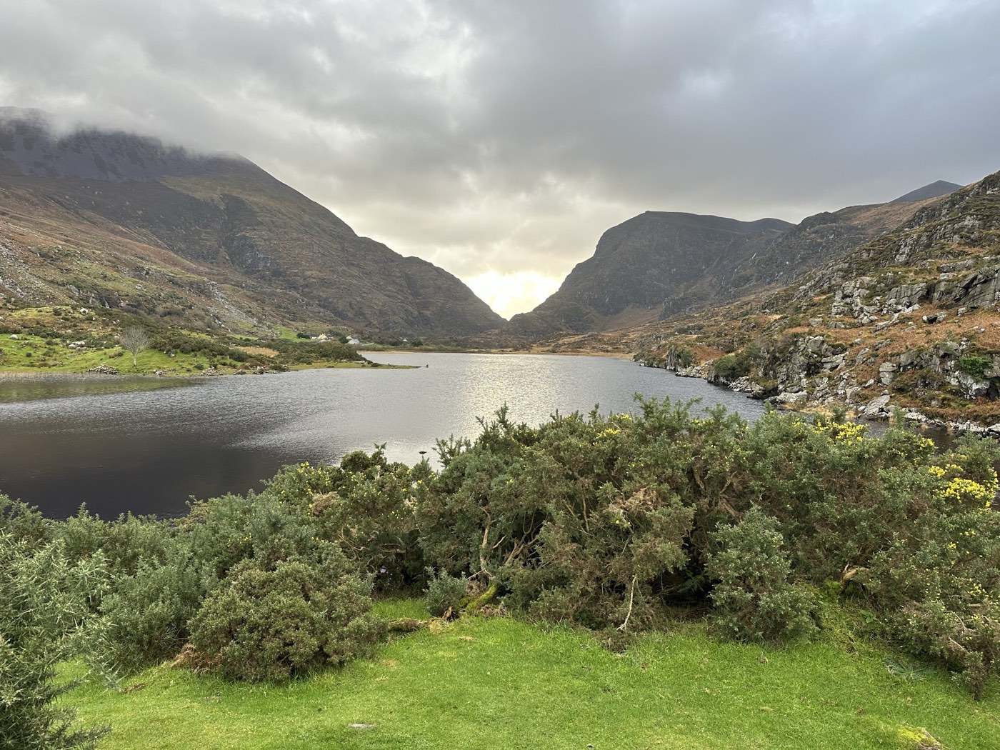
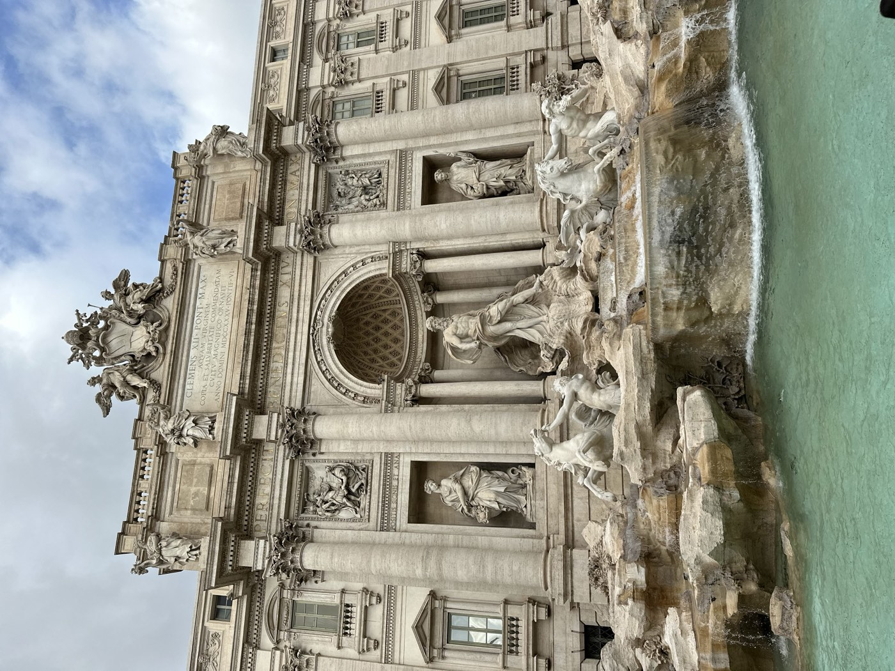
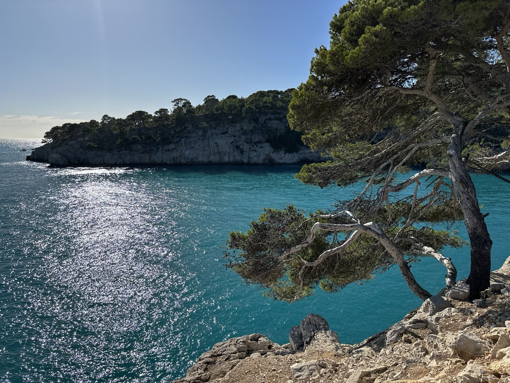
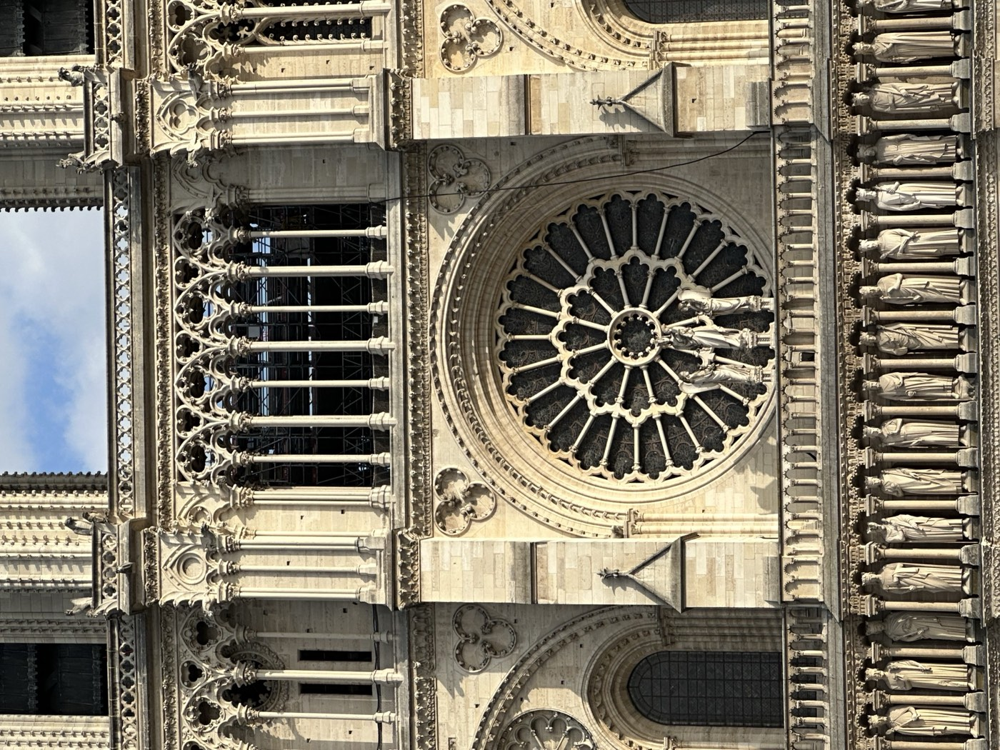
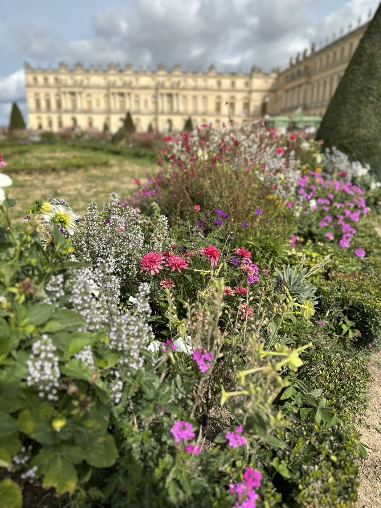
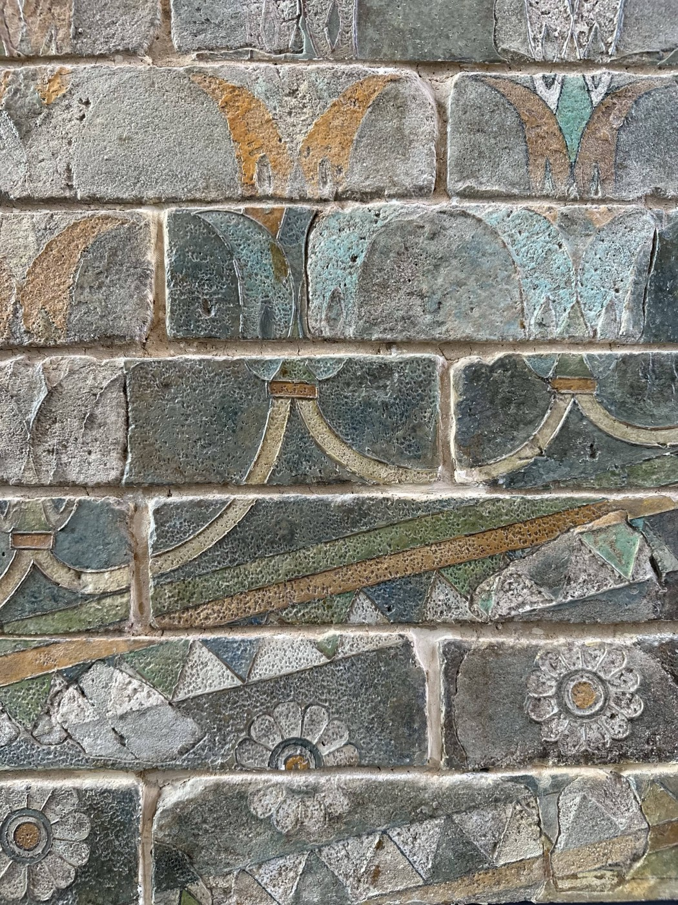

Skip to content
Luke Miller
Writing
Reading
Lists
About
Photos
2025
November

Gap of Dunloe, Ireland
November 24, 2025
2023
November

Trevi Fountain
November 15, 2023
October

Calanques National Park, France
October 21, 2023
September

Notre Dame
September 30, 2023

Gardens of Versailles
September 29, 2023

Ancient Mesopotamian glazed brickwork, Musée du Louvre, Paris
September 28, 2023